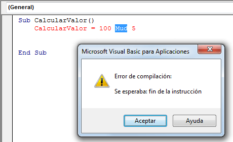
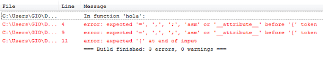
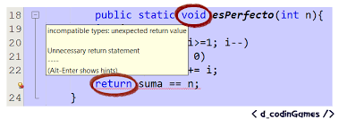

Tipos de errores
Errores de sintaxis:
Son errores en el código fuente. Pueden deberse a palabras reservadas mal escritas, expresiones erróneas o incompletas, variables que no han sido declaradas, etc. Los errores de sintaxis se detectan en la fase de compilación. El compilador, además de generar el código objeto, nos dará una lista de errores de sintaxis. De hecho nos dará sólo una cosa o la otra, ya que si hay errores no es posible generar un código objeto.
Warnings
Un error implica directamente que el código no está bien programado, este error detectado va a impedir con total seguridad que el programa funcione correctamente, por tanto, debe ser corregido para que el compilador nos permita continuar con el proceso de compilación. Un warning, en cambio, no es más que un aviso que el compilador lanza al desarrollador en cuestión. El código puede estar bien programado y el programa resultante
Ejecución
Los errores de ejecución normalmente no obtendremos mensajes de error muy específicos o incluso puede que no obtengamos ningun error, sino que simplemente el programa terminará inesperadamente Estos errores son más difíciles de detectar y corregir pues se trata de la lógica como tal de nuestra aplicación Existen herramientas auxiliares para buscar estos errores, son los llamados depuradores debuggers
Generalmente los errores en tiempo de ejecución se dan por situaciones no consideradas en la aplicación, por ejemplo, que el usuario ingrese una letra en vez de un número y ésto no es controle
Sintaxis
Son errores en el código fuente. Pueden deberse a palabras reservadas mal escritas, expresiones erróneas o incompletas, variables que no han sido declaradas
Los errores de sintaxis se detectan en la fase de compilación y además de generar el código objeto, nos dará una lista de errores de sintaxis
Diseño
Estos errores sólo cabe practicar y pensar realizar pruebas de escritorio hacerle seguimiento y depuración a la aplicación hasta dar con el problema una mala asignación, un valor inesperado, olvidar actualizar una variable tambien es útil buscar un poco de ayuda de libros o en sitios y foros especializados.
No habrá ningún programa que nos pueda ayudar a corregirlos, pues es imposible que un programa pueda determinar qué es lo que tratamos de conseguir o un programa que realice aplicaciones cualquiera por nosotros.
Enlazado
El programa enlazador también puede encontrar errores normalmente se refieren a funciones que no están definidas en ninguno de los ficheros objetos ni en las bibliotecas
Puede que hayamos olvidado incluir alguna biblioteca, o algún fichero objeto, o puede que hayamos olvidado definir alguna función o variable, o lo hayamos hecho mal